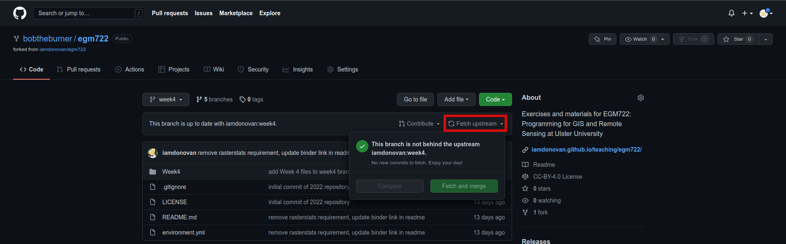
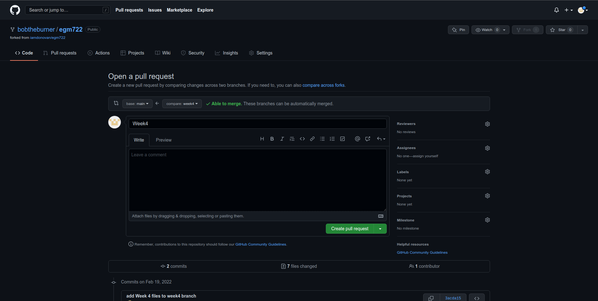
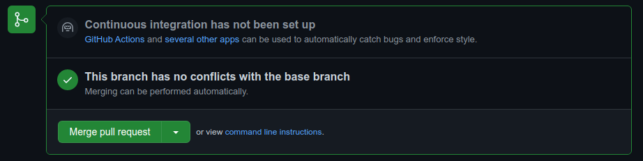

raster data using rasterio
Contents
raster data using rasterio#
In this practical, you’ll gain some more experience working with raster data in python using rasterio and numpy. We
will also learn about opening and closing files using python, as well as using *args and **kwargs to add more
flexibility to our function definitions.
The practical this week is provided as a Jupyter Notebook, which you can use to interactively work through the different steps of the practical. An exercise, introduced at the end of the Notebook file, can be completed using the file assignment_script.py.
Getting Started#
Last week, we saw how we can use the command-line interface (CLI) of git to merge two branches (in this case,
week3 into main). This week, we’re going to see how to do this on GitHub, using a Pull Request.
First, head over to your EGM722 GitHub repository (https://github.com/<your_username>/egm722).
By now, you should have merged the week2 and week3 branches, so your main branch should look like this:
{kind=link}
Like we saw last week, we can confirm that there aren’t any changes in to the upstream week4 branch
by switching to the week4 branch:
Note
If you don’t see “This branch is up to date with iamdonovan:week4”, you can fetch the upstream changes by clicking the dropdown menu:
{kind=link}
There are a number of different ways to actually open a Pull Request. From the branches page
(https://github.com/<your_username>/egm722/branches), you can open a Pull Request for a
specific branch by clicking the button next to that branch:
{kind=link}
Otherwise, you can click on the Pull Requests tab:
{kind=link}
and click on the green New pull request button to start a new pull request:
{kind=link}
Note that the default behavior may be to try to merge from your fork into the upstream repository,
so make sure that you’re attempting to merge the correct branches. You’ll need to change the branch that you’re
merging into to <your_username>/egm722:main, and the branch that you’re merging from to
<your_username>/egm722:week4. It should look like this:
{kind=link}
Once you’ve done this, scroll down to see the comparison showing which files have changed:
{kind=link}
Here, deletions are shown on the left, while additions are shown on the right. For each file that has changed
(either because it’s being added, or because it has been modified), you can see the summary of the changes in
the upper left of each entry.
For this file, README.md, there have been 2 changes: 1 deletion and 1 addition (note that the current version may be slightly different).
Most of the changes that you see should be additions, since most of the files are only present on the week4 branch.
Once you’ve had a look at the comparison for the different files, you can click on the green Create pull request button, which will take you to the following page:
{kind=link}
Depending on the project and repository settings, the pull request might need to be reviewed by others before
it can be approved. The Message field above allows you to explain what the proposed changes are and why they
should be approved.
Since you’re only making a change on your repository, you can leave this blank (though it’s good practice to explain what you’re doing in case you ever have to review what you’ve done – future you will thank you…).
Once you’ve written the message, you can press the Create pull request button. As long as there aren’t conflicting changes (lines that have been changed in both branches), you should be able to merge the pull request by clicking the Merge pull request button:
{kind=link}
You should then see the following screen, indicating that the two branches have been successfully merged:
{kind=link}
If you head back to the main repository page, you should see that the changes have been merged:
{kind=link}
Now, on your computer, you can pull the changes to your machine using either GitHub Desktop or the
command line:
{kind=link}
At this point, you can launch Jupyter Notebooks as you have in the previous weeks, and begin to work through
the practical exercise.
Note
Below this point is the non-interactive text of the notebook. To actually run the notebook, you’ll need to follow the instructions above to open the notebook and run it on your own computer!
James Garner#
Overview#
Up to now, you have gained some experience working with basic features of python, used cartopy and matplotlib to create a map, and explored using shapely and geopandas to work with vector data. In this week’s practical, we’ll be looking at working with raster data using rasterio and numpy.
Objectives#
Learn about opening and viewing raster data using rasterio and cartopy
Become familiar with opening files using a
withstatementUse
*and**to unpack arguments in a functionUse rasterio to reproject raster data
1. Getting started#
In this practical, we’ll be working with raster data. As a quick refresher, raster data are gridded datasets that contain anything from aerial and satellite images to elevation, temperature, or classisfied land cover. A raster is made up of pixels (or cells), where each pixel value represents the dataset’s value at a given location.
To get started, run the following cell to import rasterio and matplotlib.
%matplotlib inline
import numpy as np
import rasterio as rio
import cartopy.crs as ccrs
import matplotlib.pyplot as plt
In the box below, we load the dataset using rio.open(), then view
some of the attributes of the dataset.
rio.open() creates a
DatasetReader
object that we use to read the dataset and its attributes. When we do
this, we don’t actually load the full raster into memory - we just open
the file and read the metadata and other attributes. Later on, we’ll
load the raster into memory; for now, we’ll look at the different
attributes of the DatasetReader object.
For starters, the name attribute is the filename for the dataset,
and the mode refers to how the dataset has been opened (r for
read, w for write, r+ for read/write). We can also check how
many layers, or bands, the datset has using count, and check the
size of the image using width and height. Finally, we can see
the different types of data (e.g., integer, floating point, etc.) that
each band has using dtypes.
dataset = rio.open('data_files/NI_Mosaic.tif')
print('{} opened in {} mode'.format(dataset.name,dataset.mode))
print('image has {} band(s)'.format(dataset.count))
print('image size (width, height): {} x {}'.format(dataset.width, dataset.height))
print('band 1 dataype is {}'.format(dataset.dtypes[0])) # note that the band name (Band 1) differs from the list index [0]
We can also look at the georeferencing information for the dataset. The
bounds attribute gives locations for the left, bottom, right, and
top sides of the image:
print(dataset.bounds)
Note that these values are in the coordinate reference system (CRS) of
the dataset, which we can view using the crs attribute:
print(dataset.crs)
This dataset has a CRS of EPSG:32629, which corresponds to WGS84 UTM Zone 29N.
Finally, the transform of a dataset is a 3x3 affine transformation
matrix:
print(dataset.transform)
The maps pixel locations to real-world coordinates. The matrix has the following form:
| a b c |
| d e f |
| 0 0 1 |
where:
a corresponds to the pixel width;
b is the row rotation (normally 0);
c is the x coordinate of the upper-left corner of the image;
d is the column rotation (normally 0);
e is the pixel height;
f is the y coordinate of the upper-left corner of the image.
2. Loading the data#
To load the data, we use the read()
method
of the DatasetReader object. This returns a
numpy array:
img = dataset.read()
By default, read() will load all of the bands associated with the
dataset. To load specific bands, we can pass individual indices, or a
list of indices, that we want to load (e.g., dataset.read(1) to load
the first band or dataset.read([1, 2]) to load the first 2 bands).
Note that when we pass indices to the read() method, we start
indexing from 1, rather than 0. This is not the case for the array that
is returned, however - here, the indices start from 0. This can be
confusing, so it’s good to pay attention to what kind of object you are
working with when you start indexing.
print(img.shape) # returns a tuple with the number of image bands bands, image height, and image width.
print(img[7]) # will return an IndexError, because while there are 7 bands, the indices range from 0 to 6.
If we want to get a specific pixel value, we can index the array just like we would a list or tuple. For example, to get the value of the center pixel in Band 1, we can do the following. For the arrays that we are using, the first index corresponds to the band (if there’s more than one band), the second index (first index if there’s only one band) corresponds to the row (y) location, and the third (second) index corresponds to the column (x) location:
print(img[0, dataset.height // 2, dataset.width // 2]) # note that // performs floor division, as indices have to be integers
Using the DatasetReader object, we can also find the pixel indices
corresponding to spatial locations, and vice-versa, using both the
index() method and the transform attribute. Note that the
spatial locations should be in the same CRS as the image transform - if
they are not, the image indices returned might not make sense:
centeri, centerj = dataset.height // 2, dataset.width // 2 # note that centeri corresponds to the row, and centerj the column
centerx, centery = dataset.transform * (centerj, centeri) # note the reversal here, from i,j to j,i
print(dataset.index(centerx, centery))
print((centeri, centerj) == dataset.index(centerx, centery)) # check that these are the same
If we don’t want to load the whole image at once, we can also choose a
window using read. The format for this is a tuple of
tuples corresponding to the top/bottom indices and left/right
indices of the window. We can combine this with index() to load a
subset of the image based on spatial location (for example, using a
vector dataset). Here, we can select a 1 km window around the center
pixel:
top, lft = dataset.index(centerx-500, centery+500)
bot, rgt = dataset.index(centerx+500, centery-500)
subset = dataset.read(window=((top, bot), (lft, rgt))) # format is (top, bottom), (left, right)
dataset.close() # remember to close the dataset now that we're done with it.
3. The with statement#
In python, we use the built-in open() function to open files on the
disk, in almost exactly the same way that rasterio.open() works. If
you were to run the line of code below, you would see an output like
this:
In [42]: dataset
Out[42]: <open DatasetReader name='data_files/NI_Mosaic.tif' mode='r'>
Here, the file is open, with a mode r for reading. Once we are
done with the file (either reading, writing, appending, or whatever it
happens to be), we have to remember to close the file using the
close() method:
f = open('my_file.txt', 'w')
...
f.close()
However, sometimes things happen. For example, an exception might be raised, or the interpreter might crash, and the file might stay open.
One way that we can handle opening/closing files without having to
remember to explicitly close them is using a with statement:
with open('my_file.txt', 'w') as f:
...
This is exactly the same as what’s written above - within the with
statement, we can use the variable f exactly as we would in the
other example. In the cell below, we can re-open the dataset, extract
the different attributes that we will need for the next few exercises,
and then close the file:
with rio.open('data_files/NI_Mosaic.tif') as dataset:
img = dataset.read()
xmin, ymin, xmax, ymax = dataset.bounds
You should see that dataset is now a closed DatasetReader
object:
dataset
4. Displaying raster data using matplotlib and cartopy#
Now that we’ve loaded our image, we can use cartopy and matplotlib to display it, just like we did for mapping vector data in Weeks 2 and 3. To start, we’ll create a new cartopy CRS object, and use this to create a matplotlib Axes object:
myCRS = ccrs.UTM(29) # note that this matches with the CRS of our image
fig, ax = plt.subplots(1, 1, figsize=(10, 10), subplot_kw=dict(projection=myCRS))
Now, we will use
`ax.imshow() <https://matplotlib.org/stable/api/_as_gen/matplotlib.axes.Axes.imshow.html>`__
to display a single band from our image. We’ll use the
Landsat
Near Infrared band - for our image, which is based on Landsat 5 TM
images, this is Band 4 (remember that this corresponds to index 3 of our
bands array):
ax.imshow(img[3], cmap='gray', vmin=200, vmax=5000)
fig
As you can see from the link above, imshow() has a number of
arguments that we can use to display our image. As we are using only a
single band, we can set the minimum (vmin) and maximum (vmax)
values of the image to stretch the display to, as well as what colormap
to use (cmap). For more information about colormaps, you can check
out this
tutorial,
as well as a recent
paper on the
(mis)use of color in science.
But, mouse over the figure window above - what coordinates do you see in
the bottom right corner? Do they look correct? By default, imshow()
uses the row/column indices of the image, rather than the geographic
coordinates. To set these properly, we have to tell imshow() both
the tranform (CRS) to use, as well as the extent of the image.
Run the cell below, then mouse back over the figure above. The
coordinates (both the projected and geographic coordinates) should look
more correct now.
ax.imshow(img[3], cmap='gray', vmin=200, vmax=5000, transform=myCRS, extent=[xmin, xmax, ymin, ymax])
fig
This is not the only way that we can display images, however. We can also display them as RGB color composites. Try the following code:
ax.imshow(img[0:3], transform=myCRS, extent=[xmin, xmax, ymin, ymax])
fig
So that didn’t work - we get a TypeError with the following message:
TypeError: Invalid shape (3, 1500, 1850) for image data
Remember that dataset.read() loaded the raster as a raster with
three dimensions:
dimension 1: the bands
dimension 2: the rows
dimension 3: the columns
But, ax.imshow() expects that the image indices are in the order
(rows, columns, bands). From the documentation, we also see that:
X: array-like or PIL image
The image data. Supported array shapes are:
(M, N): an image with scalar data. The values are mapped to colors using normalization and a colormap.
See parameters norm, cmap, vmin, vmax.
(M, N, 3): an image with RGB values (0-1 float or 0-255 int).
(M, N, 4): an image with RGBA values (0-1 float or 0-255 int), i.e. including transparency.
The first two dimensions (M, N) define the rows and columns of the image.
Out-of-range RGB(A) values are clipped.
So, to show an RGB image, we also need to scale our image to have values between 0-1 (or 0-255).
Now, we could try do this each and every time that we want to display an image, but this makes for unreadable code and also increases the likelihood that we will make a mistake writing our code.
In other words, this is a perfect place to write a function:
def img_display(image, ax, bands, transform, extent):
'''
This is where you should write a docstring.
'''
# first, we transpose the image to re-order the indices
dispimg = image.transpose([1, 2, 0])
# next, we have to scale the image.
dispimg = dispimg / dispimg.max()
# finally, we display the image
handle = ax.imshow(dispimg[:, :, bands], transform=transform, extent=extent)
return handle, ax
h, ax = img_display(img, ax, [2, 1, 0], myCRS, [xmin, xmax, ymin, ymax])
fig # just to save you from scrolling back up to see
So that worked, but the image is very dark - this is because of the way the we “normalized” the values to fall between 0 and 1, using the maximum of all of the bands:
maxvals = [img[i].max() for i in range(dataset.count)]
print(maxvals)
From the code below, we see that not all of the bands have the same range of values. Bands 1-3 have fairly low maximum values (2500-4100), while Band 5 has the highest values of all, over twice as high as in bands 1-3.
Rather than normalizing using the maximum value of all of the bands, we might want to instead normalize based on the maximum value of a given band. However, that might still result in dark or washed-out images.
Let’s instead try a percentile stretch, which should give a bit nicer results:
def percentile_stretch(image, pmin=0., pmax=100.):
'''
This is where you should write a docstring.
'''
# here, we make sure that pmin < pmax, and that they are between 0, 100
if not 0 <= pmin < pmax <= 100:
raise ValueError('0 <= pmin < pmax <= 100')
# here, we make sure that the image is only 2-dimensional
if not image.ndim == 2:
raise ValueError('Image can only have two dimensions (row, column)')
minval = np.percentile(image, pmin)
maxval = np.percentile(image, pmax)
stretched = (image - minval) / (maxval - minval) # stretch the image to 0, 1
stretched[image < minval] = 0 # set anything less than minval to the new minimum, 0.
stretched[image > maxval] = 1 # set anything greater than maxval to the new maximum, 1.
return stretched
Here, we have a few things happening. In the function header, we have two parameters, pmin and pmax, that we provide default values of 0 and 100, respectively:
def percentile_stretch(image, pmin=0, pmax=100):
...
We’ve seen this before, but it’s worth re-stating here that if we call the function like this:
stretched = percentile_stretch(img)
It will use the default values for pmin and pmax. Using default values like this provides us a way to make sure that necessary parameters are always set, without us always having to remember to set them when we call a function.
Next, note the two conditional statements at the beginning of the function:
# here, we make sure that pmin < pmax, and that they are between 0, 100
if not 0 <= pmin < pmax <= 100:
raise ValueError('0 <= pmin < pmax <= 100')
We first check that pmin >= 0 (because it’s a percentage), that pmin < pmax, and that pmax <= 100 (because it’s a percentage).
If any of these things are not true, we raise a ValueError, with a message indicating what caused the error.
We also want to make sure that our image only has two dimensions (i.e.,
we are operating on a single band), so we check that the number of
dimensions (ndim) is equal to 2:
# here, we make sure that the image is only 2-dimensional
if not image.ndim == 2:
raise ValueError('Image can only have two dimensions (row, column)')
After that, we use
`np.percentile() <https://numpy.org/doc/stable/reference/generated/numpy.percentile.html>`__
to calculate the percentile value:
minval = np.percentile(image, pmin)
maxval = np.percentile(image, pmax)
stretch the image to values between 0 and 1:
stretched = (image - minval) / (maxval - minval) # stretch the image to 0, 1
and make sure to set any values below our minimum/maximum values to be equal to 0 or 1, respectively:
stretched[image < minval] = 0 # set anything less than minval to the new minimum, 0.
stretched[image > maxval] = 1 # set anything greater than maxval to the new maximum, 1.
Now, we should update img_display() to use percentile_stretch():
def img_display(image, ax, bands, transform, extent, pmin=0, pmax=100):
'''
This is where you should write a docstring.
'''
dispimg = image.copy().astype(np.float32) # make a copy of the original image,
# but be sure to cast it as a floating-point image, rather than an integer
for b in range(image.shape[0]): # loop over each band, stretching using percentile_stretch()
dispimg[b] = percentile_stretch(image[b], pmin=pmin, pmax=pmax)
# next, we transpose the image to re-order the indices
dispimg = dispimg.transpose([1, 2, 0])
# finally, we display the image
handle = ax.imshow(dispimg[:, :, bands], transform=transform, extent=extent)
return handle, ax
Now, run the new function:
h, ax = img_display(img, ax, [2, 1, 0], myCRS, [xmin, xmax, ymin, ymax], pmin=0.1, pmax=99.9)
fig # just to save you from scrolling back up to see
That looks much better - we can now see the image, it has good contrast, and the image is displayed in the correct location on the map.
5. functions with *args and **kwargs#
At the moment, however, our function has a lot of extra parameters/arguments:
def img_display(image, ax, bands, transform, extent, pmin=0, pmax=100):
...
Rather than explicitly specifying the transform and extent each time,
for example, we can change this to use the unpacking
operator, **. In
this way, we can define a dict of keyword arguments (kwargs) to pass
to percentile_stretch() and ax.imshow():
def new_img_display(image, ax, bands, stretch_args=None, **imshow_args):
'''
This is where you should write a docstring.
'''
dispimg = image.copy().astype(np.float32) # make a copy of the original image,
# but be sure to cast it as a floating-point image, rather than an integer
for b in range(image.shape[0]): # loop over each band, stretching using percentile_stretch()
if stretch_args is None: # if stretch_args is None, use the default values for percentile_stretch
dispimg[b] = percentile_stretch(image[b])
else:
dispimg[b] = percentile_stretch(image[b], **stretch_args)
# next, we transpose the image to re-order the indices
dispimg = dispimg.transpose([1, 2, 0])
# finally, we display the image
handle = ax.imshow(dispimg[:, :, bands], **imshow_args)
return handle, ax
Now, create a dict called my_kwargs with keys extent and
transform, using the values we passed to ax.imshow() previously:
my_kwargs = {'extent': [xmin, xmax, ymin, ymax],
'transform': myCRS}
my_stretch = {'pmin': 0.1, 'pmax': 99.9}
h, ax = new_img_display(img, ax, [2, 1, 0], stretch_args=my_stretch, **my_kwargs)
fig
You should see that this is the same image as before - the only thing that’s changed is how we call the function.
Feel free to try different stretch values, to see how it changes the image. If you’re interested in learning more about Landsat band combinations and image enhancement in general, you are welcome to watch the lecture videos provided by these links.
6. Reprojecting rasters using rasterio#
Fortunately, our image was provided in a geographic format that matches
what we’ve been working with (WGS84 UTM Zone 29N). But, what if we need
to have our image in a different format? In that case, we can use the
rasterio.warp sub-module to reproject the image. The example below
comes directly from an example provided in the rasterio
documentation,
and it makes use of two concepts that we’ve introduced in this
practical: the with statement, and **kwargs. For more details
about the different functions, such as
rasterio.warp.calculate_default_transform() or
rasterio.warp.reproject, check out the
documentation.
The first part of this example:
with rio.open('data_files/NI_Mosaic.tif') as src:
transform, width, height = rio.warp.calculate_default_transform(
src.crs, dst_crs, src.width, src.height, *src.bounds)
opens the NI_Mosaic.tif file, and find the new transform,
width, and height attribute values for the reprojected (output)
raster. Next, we copy the meta attribute, a dict object, from
the source dataset:
kwargs = src.meta.copy()
We then update (change) some of the attributes of the dict
object to match the output dataset:
kwargs.update({
'crs': dst_crs,
'transform': transform,
'width': width,
'height': height
})
Finally, we open the new (reprojected) dataset, and reproject each band
from the source dataset to the output dataset, using a nearest-neighbor
resampling (Resampling.nearest):
with rio.open('data_files/NI_Mosaic_ITM.tif', 'w', **kwargs) as dst:
for i in range(1, src.count + 1): # ranging from 1 to the number of bands + 1
rio.warp.reproject(
source=rio.band(src, i),
destination=rio.band(dst, i),
src_transform=src.transform,
src_crs=src.crs,
dst_transform=transform,
dst_crs=dst_crs,
resampling=Resampling.nearest)
Note that this example only reprojects the raster from one CRS to
another. If we wanted to, say, reproject the raster while also changing
the pixel size or cropping to a particular data frame, we would need to
calculate the new transform, width, and height values
accordingly.
import rasterio.warp # note: we will be able to use rio.warp here, since we've previously imported rasterio as rio.
dst_crs = 'epsg:2157' # irish transverse mercator EPSG code
with rio.open('data_files/NI_Mosaic.tif') as src:
transform, width, height = rio.warp.calculate_default_transform(
src.crs, dst_crs, src.width, src.height, *src.bounds)
kwargs = src.meta.copy() # this copies the meta dict object
kwargs.update({
'crs': dst_crs,
'transform': transform,
'width': width,
'height': height
}) # note: to change the values in a dictionary, we use the update() method
with rio.open('data_files/NI_Mosaic_ITM.tif', 'w', **kwargs) as dst:
for i in range(1, src.count + 1): # ranging from 1 to the number of bands + 1
rio.warp.reproject(
source=rio.band(src, i),
destination=rio.band(dst, i),
src_transform=src.transform,
src_crs=src.crs,
dst_transform=transform,
dst_crs=dst_crs,
resampling=rio.warp.Resampling.nearest)
Next steps#
That wraps up the practical for this week. Next week, we’ll look at some
more programming concepts, as well as ways that we can work with both
raster data and vector data. In the meantime, use the
assignment_script.py file in the Week4 folder to work on a script
that combines the concepts we’ve used this week, as well as some of the
material from previous weeks, to produce a map that overlays the county
borders and town/city locations on the satellite image provided.
For an additional challenge, try this: In the image below, notice how
the area outside of the county borders has been covered by a
semi-transparent overlay. Can you work out a way to do this? Check over
the import statements in assignment_script.py carefully -
there’s at least one import that we haven’t used yet, but it should help
point you in the right direction.
I’ll provide my example next week, but try to think about the different steps involved and how you might solve this, using some of the examples provided in previous weeks. Good luck!